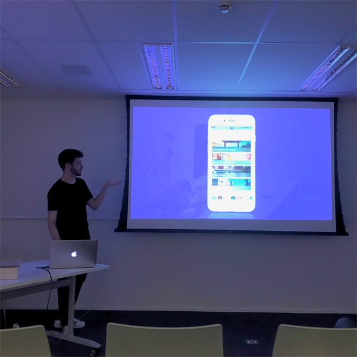

 
Fabrício Serralvo is iOS Developer at Eldorado Research Institute since 2015. Before it, was intern at two small companies in Campinas, where he worked with web technology.

He has Bachelor's Degree in Information Systems by Pontifical Catholic University of Campinas (2012 - 2017).


</br>
<i>Fabrício Serralvo, talking about iMessage Apps at 23th CocoaTalks Campinas - 2017. </i>

To contribute to developers community, Fabrício tries to went to local meetups.

Futhermore, he belives that education is the better way to enhace people lifes, technology and sports also.

Note: I generally do not talk about my self in third person.

Fabrício - 2017, from 🇧🇷